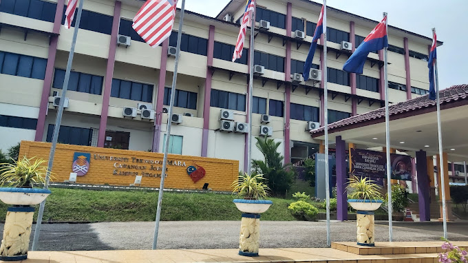
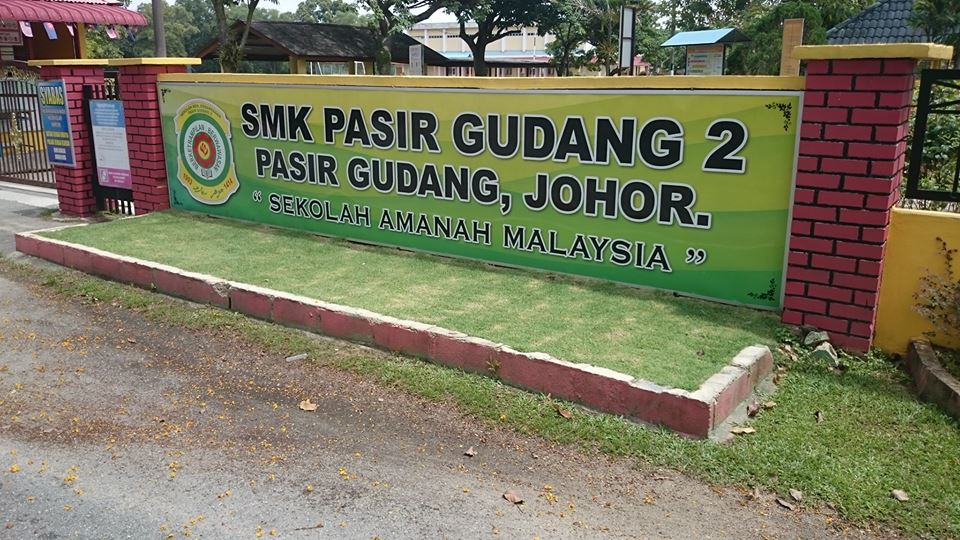

| 1 |

|

Universiti Teknologi MARA (UiTM) Johor, Kampus Segamat
-
My academic journey took an exciting turn when I enrolled at Universiti Teknologi MARA (UiTM) Johor, Kampus Segamat.
-
Located at Jalan Universiti Off, KM 12, Jalan Muar, Kemajuan Tanah Jementah Batu Sebelas, 85000 Segamat, Johor Darul Ta'zim.
-
Pursued a Diploma in Information Management, aligning perfectly with my interests and aspirations.
-
Enjoyed enriching studies, warm friendships, and a serene environment in Segamat.
-
Aimed to achieve excellent results, dreaming of the Vice-Chancellor's Award or consistently making the Dean's List.
-
Supported by friends and lecturers who keep me motivated and inspired every step of the way.
|
| 2 |
|

Sekolah Mengengah Kebangsaan Pasir Gudang 2
-
My journey began at Sekolah Menengah Kebangsaan Pasir Gudang 2, located at Jalan Mawar Putih, Taman Mawar, 81700 Pasir Gudang, Johor.
-
Spent my formative years here from 2017 to 2021, creating countless memories and achieving significant milestones.
-
Scored an impressive 5A’s in my Sijil Pelajaran Malaysia (SPM) examination.
-
Experienced vibrant laughter, dedicated teachers, and cherished moments that remain unforgettable.
-
SMK Pasir Gudang 2 wasn’t just a school; it was a family that nurtured my dreams and built the foundation for my future.
|